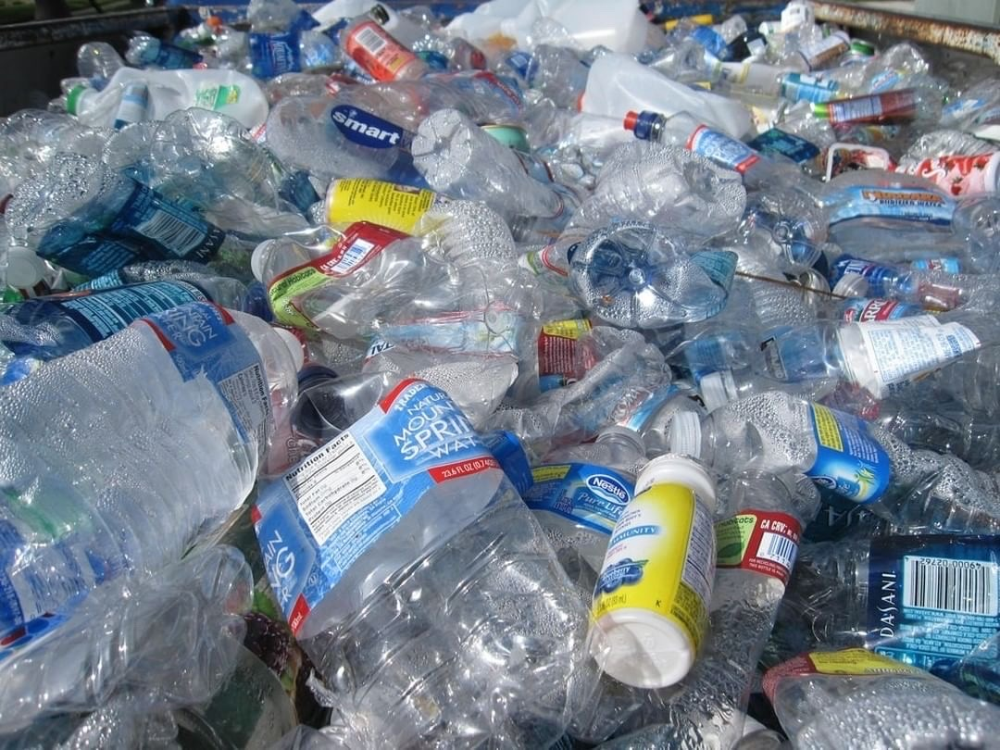
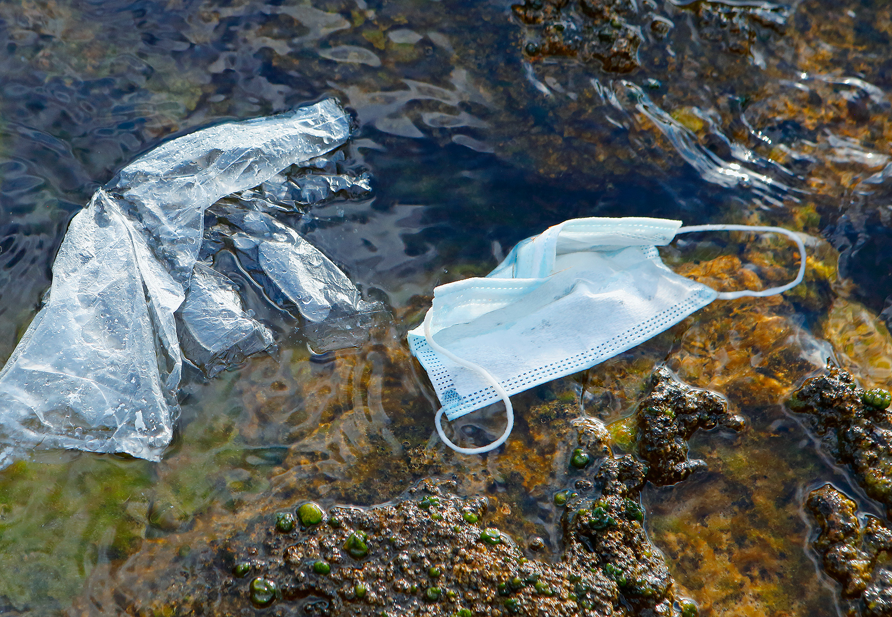
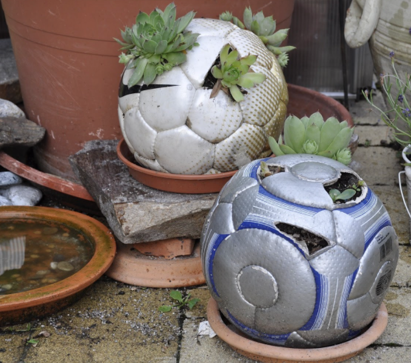
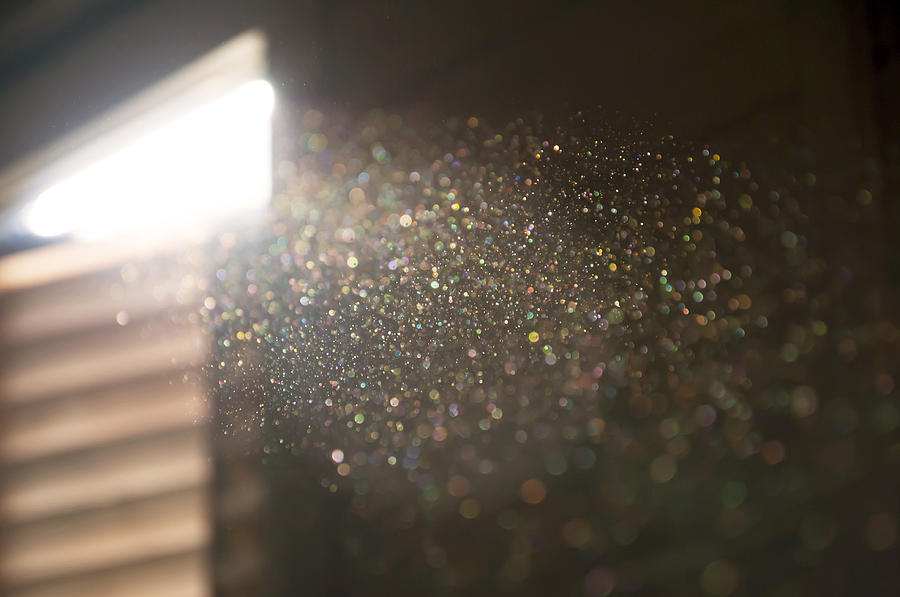

Home
The Team
Products
Contacts
Events
Articles
Donate
Read Repair The Waves Articles

Plastic Bottles Can Now Be Turned Into Vanilla

Effects of Masks On Oceans

Upcycling: An Art of Reinvention

Plastic In The Air
©2021 Repair The Waves
Site designed by Repair The Waves technology team